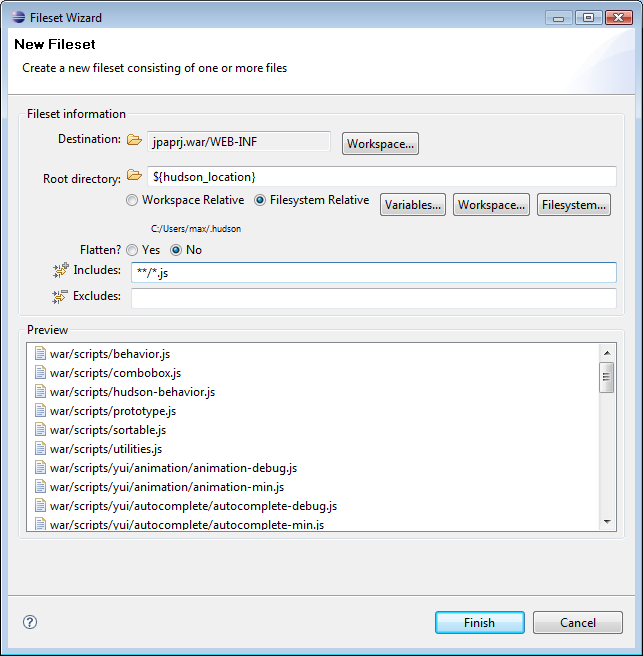

|
Archives can now use Eclipse variables to specify destination paths and paths are now relative to the location of the .packages file.
These two features allow teams to more easily share .packages files because it allows for more flexibile/dynamic archive specification
Example 1: Because we no longer require absolute paths including the project name you can now have /projectA-1.0 and /projectA-2.3 and not having to change the .packages file to reflect the change in version numbers. Instead of using /projectA-1.0 or /projectA-2.3 as path you just use "" (blank) or ".".
Example 2: By using Eclipse variables you can setup a system specific location but just refer to it via an eclipse variable. e.g. the following screenshots shows how usage of a custom defined variable (${hudson_loc}).

Variables can be selected and configured via the "Variables" button.
|